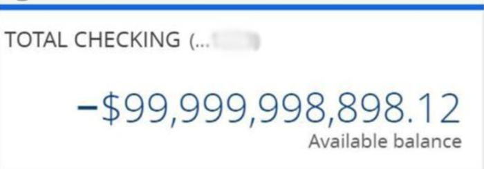
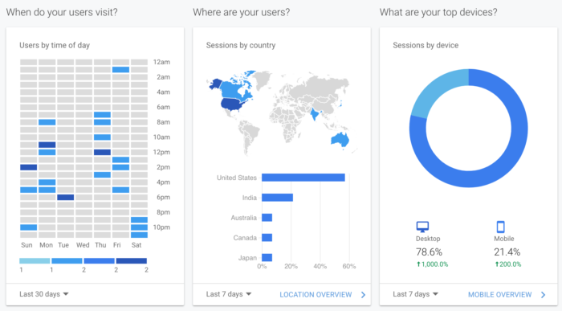
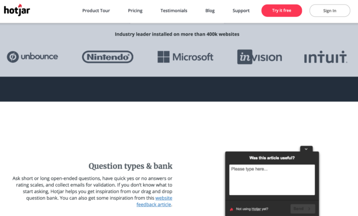

Financial freedom · Part 3
Chapter 12: How to buy, grow, and sell an online business
Buying a business can be highly profitable, with limited risk—if you know what you're doing
Buying a business can boost—and diversify—your income.
My wife and I have purchased and sold three businesses, all for a profit. This article contains everything we've learned.
This is a long article. Feel free to click a link below to skip ahead:
The pros and cons of buying a business
Pros
Diversified income. Let's say you buy a business that makes as much money as your make from your job. In one fell swoop, you've doubled your income and cut your reliance on your job. By having two income streams, you've reduced your risks and hedged your bets.
Greater control. You are the master of your own destiny.
Location-independent. Because online businesses are, um, online, you can work from anywhere in the world. As we've seen throughout this book, being location independent is a great way to reduce your expenses.
Cons
Higher risk. Be careful: this is the Wild West, buckaroo. You are ultimately responsible for vetting the business—and if something happens down the road, you're screwed. Do your due diligence.
Low liquidity. Cash flow is great, but you only get your investment back when you sell. By tying up your capital in a few businesses, you lack the flexibility to take advantage of other opportunities.
Expensive fees when you sell. Most brokers will charge 10–15% of the purchase price. (In my experience, most brokers are helpful, and a few are excellent or terrible.)
Where to find online businesses for sale
There are two types of places to find online businesses for sale: marketplaces and brokerages.
Marketplaces, such as Flippa, generally feature lower-priced businesses, and you're responsible for doing your own due diligence. They're ideal if you just want to get your feet wet and aren't overly worried about the business failing.
Brokerages, on other hand, feature higher-priced businesses (think six or seven-figures). Brokerages will carefully review and vet businesses before listing them for sale on their site. I know this because I've gone through this process three times with two different brokerages; in each instance, I had to build a compelling case for the broker to list my buisinesss for sale.
In addition, brokers will be involved in the sales process every step of the way: they join calls between the seller and prospective buyer, and ensure all documents are present and signed for.
Of course, brokers add to the overall expense of buying a business—generally around 10% of the purchase price—but in my experience, they've been well worth their fee.
For these reasons, I prefer brokers over marketplaces.
Below are several online brokers:
- Quiet Light Brokerage
- Empire Flippers
- Dealflow (this is the high-end part of Flippa, an online marketplace)
- FE International
In addition to the above, I recommend you use Centurica's Marketwatch to filter the type of business you're interested in. I used Centurica for years to aggregate the results from the brokerages listed above. It saved me a lot of time.
Now, you may be wondering: "Sure, this all sounds great—but what type of business is right for me?"
Great question.
Use this 21-point checklist to buy your "dream business"
When I started buying businesses, I developed a checklist for my "dream business." The checklist reflected an absurdly optimistic business that I'd love to buy.
It's important to clearly define your ideal business. When the right one comes along—and this is rare!—you need to move quickly.
Use the following checklist to get started, and personalize it based on your preferences:
| Feature | Benefit |
|---|---|
| 100% digital (e.g. sells ebooks, guides, apps, etc.). | Easy to manage. You don't need to worry about receiving, packaging and shipping orders. This helps you focus on growing the business. In addition, you could print books and sell them as well; this opens up a new sales channel with relative ease. |
| Sells evergreen information. | Saves time. You don't need to update evergreen content too frequently. Compare this to software updates, which can happen every week. |
| Gets traffic from different sources. | Reduces risk. If a website gets 100% of its traffic from Google search results, you're one Google update away from losing your business. Avoid single points-of-failure at all costs. |
| Currently profitable with online advertising. | Provides consistent, scalable traffic. You're less likely to get "Google slapped" when you're paying for traffic. Another benefit: paid traffic can be easy to optimize. Check to see if the seller runs their ads in-house with poorly "themed" ad groups, bad copy, or don't use retargeting. All these can quickly increase sales. |
| Huge opportunities for search engine optimization (SEO). | High potential upside. Many established websites can show up in hundreds, if not thousands of different search results. If they're not currently on the top result, you can work on improving their rankings. Ideally, find a website with hundreds of keywords on pages 2-5—you just need to push a little harder to get them to page one. (Note: you can use keyword rank tracking tools to do this quickly.) Another benefit: websites that have been around for awhile, with quality links, are easier to optimize for search. So buying an existing business lets you leverage this existing goodwill. |
| Sells multiple products. | Reduces risk, with greater upside. Why it reduces risk: With multiple products in place, you don't have a single point of failure. If one product breaks, goes out of style, or suddenly becomes more expensive to produce, you've got other products to pick up the slack. Why it provides greater upside: Cross-sells and up-sells are easy to implement when the products already exist. Plus, margins are usually higher on accessories |
| Has a large list of subscribers and buyers. | Greater upside. Companies with large, active lists are a goldmine. You can send different emails and letters (more on that in a moment) to each segment to quickly boost sales. For the best customers: Offer special bulk offers and incentives to get them coming back. For people who have never purchased: Offer a time-sensitive offer—either a discount or free accessory—to turn them into a buyer. For people who no longer buy: Take a look at your database to find customers who have stopped buying from you. Then, if you have their shipping address, mail them a simple “We want you back” letter, in print. This is much more powerful than just a template email. |
| Can be applied to direct mail. | Greater upside. Contrary to popular belief, direct mail is not dead. In fact, it's bigger than online advertising, and in many markets, less competitive. Once you've a proven online campaign, look into direct mail. |
| Can be optimized for conversion rate. | Increased revenue and profits. As someone who's optimized over 130 online businesses (and counting) I've seen first-hand the dramatic impact conversion rate optimization can have. Consider this: Increasing the conversion rate goes straight to the bottom line (minus the cost of goods sold). In other words, you get more money with the same level of traffic. You can also afford more expensive forms of traffic. For more, read "The Power Law of CRO" by Conversion Rate Experts. (Note: I am affiliated with these guys; they're brilliant, ethical, and effective. Their book, Making Websites Win, goes into conversion optimization in great detail.) |
| Has few employees (or none at all). | Makes it easier to scale. Fewer employees means the company is run by processes, not people—and processes are easier to scale. In addition, fewer employees means little-to-no drama. No employees removes this completely. Note: not every business can (or should) be run without employees. Employees should either do high-level work (e.g. development) or low-level work (e.g. customer support). |
| Has a current developer in place. (Preferably the developer who built the site.) | Saves time and mistakes down the road. Unless you've got technical chops, it's useful to have a developer on-hand from the beginning. It's especially useful if it's the developer who originally built the site because they'll understand all the nuances that may take another developer weeks to understand. |
| Runs on WordPress (or can be transferred over). | Saves time and makes it easier to hire developers. According to W3Techs, WordPress powers 35% of all the websites on the Internet. By using WordPress you can easily add plugins for specific functionality, and hire developers as needed to make bigger changes. (Though I recommend you avoid development work whenever possible; it's costly, time-consuming, and often produces no impact to a business. |
| Strong growth over past 2-3 years. | Easier to grow. If a business has increased revenue year over year, you know that the product/market fit is working, which means you're "swimming downstream." (Note: the opposite may be true as well. Private equity investors often purchase businesses with a downward trend at a discount; their hope is to turn the business around and enjoy the increased cash flow and/or higher resale price. While I understand the logic, I prefer to pay a higher price for business so I don't have to "swim upstream.") |
| Is in a new (or evergreen) market poised for growth. | Provides stability and room for growth. Evergreen markets include: Health, Finance, Weight Loss, Retirement, etc. For evergreen markets, Ask yourself: did companies advertise in this market 50 years ago? If so, great! For new markets, use Google Trends to see whether search volume (i.e. the number of people searching for something) is increasing or decreasing. Obviously, up is better. |
| Has a high Net Promoter Score (NPS). | A high NPS means people like the service. It's easier to grow a business if customers already love it. Ask the following to your customers: “On a scale of 0 to 10, how likely is it that you would recommend our company to a friend or colleague?” - People who give a rating of 9 or 10 are likely to promote the business. - People who give a rating of 7-8 are indifferent. - People who give ratings of 0-6 are likely to say bad, bad things about the business. To calculate your NPS, subtract the percentage of low scores from high ones. |
| Has solid financials. | Reduces risk. If your customer Lifetime Value (LTV) is at least two times the cost of acquiring a new customer, with at least 1x coming in the first 12 months after acquisition, you’re in great shape. Also, look at CAC (Customer Acquisition Cost) for various segments. Sometimes the best customers are more expensive to get (but are more profitable!) I highly recommend you request and review the following documents: - Balance sheet - Income (Profit and Loss) statement - Cash flow statement - Statement of retained earnings If you're unfamiliar with the above docs, consider hiring a CPA to review them before you purchase the business. |
| Enjoys a negative cash conversion cycle. | The best online retailers (e.g. Amazon) enjoy a negative cash-conversion cycle. In other words, they get paid by their customers before they have to pay their suppliers. Net-30 terms (i.e. you get paid from a customer, then have 30 days to pay the supplier) should be the minimum. Of course, digital products don't have this problem—which is why I recommended them higher up in this table. |
| Has a high Lifetime Value (LTV). | Allows for more expensive advertising (mail, print, TV). Note: many products with a high LTV don't charge much upfront. For example, many Software-as-a-Service (SaaS) businesses charge a monthly fee. So look at both the initial revenue from a purchase AND the Lifetime Value. |
| Accepts recurring payments. | Reduces cash flow risk and provides stability. Recurring payments provide consistent revenue, which reduces your risk of a "cash flow crunch." For example, your website goes down and you don't accept payments for a whole week; you'll still enjoy the recurring revenue from previous customers to keep the lights on. For this reason, most investors pay a premium for businesses with a large book of recurring revenue. And rightfully so: it's less risky. |
| Sells products between $100–$200. | Lets you iterate (and grow) faster. I've found that this price point is a sweet-spot between too cheap and too expensive. If your business sells cheap items, it's harder to break even on the front-end sale. Selling a $20 product doesn't leave you with much money to spend on advertising. If your business sells expensive items, it's more difficult to test new ideas quickly; the sample size is just too low. (You could optimize for leads, though.) Conversion rates also tend to be higher for products under $200 (see below for why this matters). |
| High conversion rate and/or traffic. | Lets you iterate (and grow) faster. High levels of traffic and/or a high conversion rate means you can test new ideas quickly. It's very hard to improve a process with limited traffic and a low conversion rate (even if your product sells for six-figures). |
How much can you buy (or sell) a business for? A simple method to value businesses
Most online businesses sell for 2–3x annual income. Several factors affect the valuation. Many factors are listed in the table above, but here are several more to consider:
- Business model. SaaS and subscription businesses usually command a higher price multiple because of their stable, recurring revenue. On the other end of the spectrum, content sites that are monetized by ads or affiliate offers will have the lowest multiples.
- Strategic benefit. Websites that solve a specific problem in a large market—think Drip for email marketing, Lynda for online training, and PushCrew for notifications—usually charge a higher multiple for the right buyer, because they can be "plugged in" to the buyer's existing business. Therefore, it's no surprise those businesses have all been acquired.
- Site age. Older sites are more trustworthy. Search engines trust established sites, and so do people. A site that's been profitable to ten years has a proven track record; a six-month-old site does not.
- Amount of work. A business that runs on autopilot will sell for more than a business that requires 40 hours a week. No one wants to buy a job.
- Competition in the market. Does the site compete directly with Amazon? Good luck.
- Stability of market. A businesses that repairs VCRs is not likely to be around in ten years. But a business that produces advice for self-improvement or weight loss is timeless.
The purchase process: Follow these six simple steps (so you don't buy a stinker)
If you work with the broker, the process is quite simple.
Step 1: Find a site you're interested in
Honestly, the first step is the hardest; I've had to look through over 300 deals before making an offer. Again, use Centurica's MarketWatch to aggregate results from multiple brokerages to save time.
Step 2: Reach out to brokers for details
This is as simple as filling out a form. Start with the list of brokers I listed earlier, fill out the form, and they'll take it from there.
Step 3: Request more information from the broker
The broker will provide you extra details (e.g. more in-depth financials). In addition, the owner may provide you Analytics access at this point. If so, refer to the points below in Step 4.
Step 4: Set up an online walkthrough
During this call, you, the owner, and the broker will take a quick tour through the owner's business. They'll show you their payment setup, back-end system, and anything else you'd like to see. The payment process is important to do live, because it helps verify the income. As you can imagine, it's pretty easy to photoshop a fake number. Case in point:

Step 5: Do your due diligence
You can do this for free, or pay a third party to do this for you. In my experience, doing it yourself is fine if you have experience with web businesses. You'll want to look at Analytics, payments, link profiles, ad campaigns, etc.
When looking in Analytics, look closely at the traffic sources. Do they seem legit? For example, one business I considered buying got a large amount of traffic from one domain. After digging further, I discovered the seller owned this other site—which wasn't included in the deal—and, since they hadn't disclosed this upfront, I took this as a huge red flag.
Needless to say, I didn't buy the business or work with that broker. (If you're wondering about which broker it was, I'd rather not throw shade. But for obvious reasons, that particular broker isn't listed above.)
Step 6: Make an offer
When you're ready to make an offer, you've a few options:
The first and most straightforward option is to offer one lump sum in cash. If you've a large cash reserve, this is probably your best bet for three reasons:
- Many sellers prefer to work with cash offers because they're faster.
- Cash offers are less likely to fall apart due to red tape from lenders.
- Since sellers prefer all-cash offers, you can negotiate a lower price—especailly if you have the only all-cash offer.
The second option is to offer a performance-based deal. In a performance-based deal you put up some money upfront, then pay the remainder later if the business hits certain goals. These goals could be tied to traffic, sales, revenue, etc.
Here are a few examples of performance-based deals:
- 75% of the asking price upfront, with the remainder paid in six months if monthly revenue averages $X over the next six months.
- 50% of the asking price upfront, with 25% paid in three months if revenue averages $X for the past three months, and the final 25% paid if revenue averages $X for the past six months.
I prefer performance-based deals. They reduce risk for the buyer, and ensures both parties want the business to grow. Most, but not all, sellers are open to performance-based deals because it allows them to secure a higher price. Structured properly, a performance-based deal is a win/win. That's why two of my three purchases were performance-based.
Regardless of how you structure your offer, you may want to secure financing. I've never done this myself—all three purchases I've made were cash—so, if you'd like to learn more, I suggest you look into term loans and, SBA loans (if you're in the US). SBA loans are term loans from the Small Business Administration; SBA loans generally offer longer terms with lower rates than traditional lenders. They're also harder to secure.
How to grow the business after you purchase it: 89 proven tactics from someone who's grown hundreds of businesses
After advising hundreds of companies, I'v developed a checklist to grow companies quickly. Below is a list of techniques that have been proven to work.
Process for fast growth:
You can only grow a business in one of three ways:
- By increasing the number of new customers.
- By increasing the frequency of purchases.
- By increasing the amount of money spent on each purchase.
We'll cover each of these in more detail shortly, but before we do, let's cover the most important step: research.
Research your prospects, customers, and competitors
Before you make any changes to your new business, conduct thorough research so you understand what makes your prospects and customers tick.
Let me say that again: Keep the website as-is for now; changing the website—no matter how seemingly small the change may be—is the worst mistake you can make. I've made this mistake and it cost me a lot of money. Instead, gather as much feedback as you can without changing a thing on the site. This approach has two advantages:
- First, you establish a baseline for the business under your ownership. It's not uncommon to purchase a business and see the revenue drop slightly. This may be to an affiliate code that no longer works, or a checkout issue with your new hosting provider... or a million other things. By not changing the site right away, you can easily zero in on pages and products that aren't performing as well since you become the owner.
- Second, you can gather feedback throughout the website—also known as a "funnel"—and gain a clear idea of what's currently working on the site, and what's not. (How will you gain this clear idea? Your visitors will tell you! More on that in a second.)
There are hundreds of ways to gather feedback. To move quickly, go through the site yourself and take notes on what could be improved. For example, did you have unanswered questions about a product? Were there elements there didn't work? Jot all these notes down—but again, don't change anything yet!
Once you've gone through the website and created your notes, ask people you know—preferably people who would be interested in the product—to go through the site themselves and give feedback. They can either email you their notes, or better still, you can screenshare with them as they use the site. This way, you can take notes while they use the site like a real user would. (If you don't want to reach out to people, there are many companies that offer user testing. The list changes frequently, so searching on Google is your best bet.)
I recommend starting with user testing because you can do this before you even own the business. It's a fast, easy way to get quality feedback right away.
Your next step—if you haven't done it already—is to go through Analytics and find out the following:
- The top landing pages
- The top exit pages
- What countries visitors are from
- The percentage of mobile/desktop users
- The percentage of new/return visitors
You can do a hell of a lot more than the above, but this is good enough to start. If you don't know how to find these in Google Analytics, you can take a look at the dashboard, which includes many of these by default. Here's what I see when I log in:

You can also search for the reports in the search bar at the top of the page:
Copy and paste the bullets I included above into the search bar to see the reports. Easy.
Now that you've identified the key pages in the funnel, you'll want to see how users interact with those pages. The simplest way to do this is to use a tool called Hotjar to create heatmaps.
Here's an example of a heatmap:
The scroll map on the left shows how far down a page users scroll; it starts "red hot" and goes "ice cold" as few people scroll down the page.
The click map on the right shows which elements users click; the brighter an element, the more clicks it received.
In addition to heatmaps, you can also use Hotjar to ask your visitors what they like and don't like about your website. To do this, create a poll and add your question; it will look like this on your site:

Besides Analytics, user testing, Hotjar heatmaps, and polls, you've plenty of other options to gather feedback—though I suggest you stick with these four at the beginning. The point is to get actionable feedback quickly; don't spend months poring over the data. Just get some feedback, and then focus on fixing any problems that people mention. This will also help you increase your sales and new customers. More on that in the next section.
Increase the number of new customers from your existing traffic
Once you've collected feedback and identified what people like and don't like about the site, you can set up split tests to see which changes will increase the number of new customers.
This subject has been written about extensively. I suggest reading this article: Split testing 101.
Increase the average-order-value (AOV) and lifetime value (LTV)
Now that you've increased the number of new customers, you'll want those customers to (i) spend more money each time they buy and (ii) buy more frequently.
Here are a few tried-and-true ways to do that.
The first, and most obvious, is to raise prices. You can run this as a split test or simply raise prices and see if it affects sales. I recommend you always split test price. If you simply raise prices without testing, you may actually decrease overall revenue without knowing it—even if you're closely tracking revenue in Analytics.
How is this possible? Because there are too many variables—such as different traffic sources, seasonality, geography, and natural fluctuations in conversion rate and average order value—for you to clearly see whether raising prices increased revenue. By contrast, when you split test, you remove all these external variables and get a clear picture.
The second method to increase average order value is to include cross-sells and up-sells throughout the funnel. People often confuse these two terms, so let's define them:
- A cross-sell is selling an additional item (e.g. "You want fries with that?").
- An up-sell is selling a premium version of the same product for a higher price (e.g. "You want the basic or the platinum package?").
When starting out, the safest place to test cross-sells and up-sells is after the initial purchase. For example, if someone buys a sweater on your website, let them check out and submit payment before offering them anything else.
Again, this approach removes any other variables at play. Those customers would've purchased the sweater anyways, so by placing a cross-sell (e.g. a scarf) after the check out, you can safely measure how many people purchase the cross-sell.
Plus, testing a cross-sell post-checkout is especially useful if you're testing new products. In the case of sweaters, you don't want a warehouse full of them if no one wants to buy it. By testing this cross-sell after checkout, you collect money first and then pay to fulfill the order. This de-risks the offer for you.
Phase 3: Grow traffic
There are many ways to grow traffic. With most businesses, there is a power law at play: most traffic comes from one channel, some comes from another, and a little come from the rest.
In no particular order, the common forms of traffic are:
- Organic search results from search engines like Google, Bing, etc.
- Paid search results from search engines like Google, Bing, etc.
- Paid ads on other networks like Facebook, Outbrain, etc.
- Social traffic from site like Facebook, Twitter, etc.
- Email (either your own or a third-party)
My rule of thumb in regards to traffic is two-fold: spend 80% of your time working on the top channel, and 20% of your time developing another channel.
For example, my first business got nearly all traffic from paid Google Ads. So we spent most of our time working on the ads, while also building up an email list of lists and automatically sending followup ads. This approach helped us to keep doing what worked while also building up a secondary channel. The secondary channel also helped de-risk the business: if paid traffic suddenly dried up, we could at least fall back on the email list for awhile.
Below are ways to grow traffic. Please note: it's not an exhaustive list; rather, it's a simple, high-level checklist. Pick one option, work it hard for a month or two, and measure the result. If it works, do more; if not, move on to the next tactic.
- Content marketing
- Creating comprehensive buyers' guides
- Investing in detailed product descriptions and listings
- Creating installation and setup guides (as discussed above)
- Creating in-depth videos showing how the product works
-
Establishing an easy-to-follow system for understanding component compatibility
-
Guest posting blast
- Pitch dozens of quality websites and offer to write a post for them. You get to link back to your website.
- This works, but it's a grind. I once pitched, wrote, and published 50 guest posts—on 50 different sites—all on the same day. It was a crazy amount of work, but got a ton of exposure.
-
Guest posts are an SEO play due to the large number of inbound links. (See SEO section below.)
-
Interview series
- The opposite of guest posting. You reach out to well-known people in your market and interview them. You post the interviews on your site and they'll (hopefully) promote your content.
-
Bonus tip: after you've conducted 10+ interviews, you can create a publish a "Top 10 lessons learned from [top people in this market]" and ask all the interviewees to share the post again. It's a great way to get more exposure for everyone.
-
Joint Venture (JV) with top partners
- Create a list of people with large email lists in your market. Partner with them, where they email their list with a special offer from you. You then split the profits from the sale.
-
This approach requires partners with large, responsive lists. Just because someone has 100,000 subscribers doesn't mean those people open the emails, let alone care about your offer.
-
Affiliate program
-
This is similar to a Joint Venture, except it's completely hands-off. Once you create an affiliate program—or use a third-party affiliate marketplace like Commission Junction—anyone can join and start sending you traffic in exchange for a commission on sales.
-
SEO
- Keyword research
- Optimize key pages
- Build links to key pages (use content marketing to drive traffic)
-
Note: SEO is a long-term play. If you don't have the time, money, or inclination, consider working on another strategy. Many SEO benefits come simple on-page optimizations and from content marketing.
-
Buy traffic
- Facebook ads
- Google Ads
- Bing
-
Remarketing (aka retargeting)
- If your new business doesn't run paid traffic, try remarketing first. This way, you only pay for ads that target people who have previously visited the site—and are more likely to convert.
-
Media buys
- Direct mail
-
TV/radio
-
Post products on top e-commerce sites
- Amazon
- eBay
-
B2B sales
-
Identify "influencers" and delight them
- Mail them a free gift (e.g. a free product, copy of your book, etc.). Email works well, too.
Ideas for simple tests
Below is a list of simple tests you can run using free split testing software like Google Optimize. This list is by no means exhaustive. As an expert in conversion optimization, I could write a book on the subject—but, fortunately, I don't have to because you can just read this one: Making Websites Win.
- Test headlines
- Identify Eugene Schwartz's six stages of awareness: create headlines around that (Breakthrough Advertising): create 12 headlines for each of the 6 levels
- This works for sub-heads and introductory paragraphs as well.
-
Alternatively, test the following formats:
- A testimonial in the headline
- A guarantee in the headline
- A proof element (e.g. "11,239 people use us to X, Y, Z")
-
Change the calls-to-action
- Look at your competitors: Create a list of the calls-to-action on their buttons and test them on your site.
- Add secondary copy under main CTA, e.g. "You can change your mind later" or "No credit card needed"
-
As a general rule for calls-to-action, make them more clear and lower-commitment. For example, instead of "Submit" try "Try it free."
-
Colors
- If the button is hard to see, make it brighter/bolder.
-
Don't focus on changing colors just because you don't like them. Focus on changing colors if it's hard to see. A simple trick is to blur your eyes when you look at a page: if you can find the call-to-action, you need to add more contrast.
-
Header tests
- Add social proof: media appearances, Facebook Likes or testimonials
- Change tagline to a stronger Unique Selling Proposition (USP)
- Remove header on key page; this reduces distracting elements
- Add contact info (e.g. address, phone number, etc.)
-
Include call-to-action using a Hello Bar
-
Overlays
-
Add an email capture in exchange for free gift. Test firing it initially or after 30 seconds on page. Also test it as an exit overlay on key sales pages; offer coupon codes, discounts, etc.
-
Checkout page
- Remove fields
- Add progress bar
- Add social proof
- Add testimonials
- Include guarantee
- Include link to privacy policy
- Add tooltip "What’s this?" next to confusing items
-
Remove the need to create an account
-
Images
- Stock Photos versus Personal Photos
- Photo vs. illustration
- Different users - e.g. young woman vs. middle aged man
- Head shot vs. Full body (can you zoom in on an existing photo?)
-
People helping the customers/prospects are especially powerful
-
Copy tweaks
- Increase font size. Don't test this in isolation as it probably won't win on its own; however, increased font-size (at least 14px, probably more) is good usability and worth "baking into" another test.
- Delete unnecessary text. You may be tempted to believe removing text won't yield results. Don't. I've gotten dozens of wins by simply deleting elements.
- Rearrange copy so it flows better.
- Bold main points.
- Rewrite "corporate-speak" and make it conversational. Websites should be like likable people, and likable people talk to you like a human being. Your web copy should reflect this.
-
Spell check!
-
Scarcity items
- "Only 3 Left at this Price!"
- "Order now and receive..."
- "Available only through Friday"
-
"You'll only see this offer once"
-
Navigation
-
Remove navigation on key pages.
-
Security & Privacy
-
Move trust icons next to the call-to-action and/or in headers, sidebars, etc.
-
Email marketing
- Cart abandonment sequence. If someone enters their email address during checkout but doesn't buy, send them a few emails asking to complete their order. You can also include a time-sensitive offer ("Complete your order in the next 48 hours and get X") to boost the perceived value and introduce urgency.
- Create story-based emails to increase open rates
-
Resend same email with different subject line to anyone who doesn't open within 24 hours.
-
Improve page load times.
- Remove timeouts on checkout pages
- Pricing table
-
Most expensive >> Least expensive (primacy effect)
-
Test homepage vs. PPC landing pages. You'd be amazed how often this works. Sometimes the landing page works better as the homepage, or vice versa. Don't guess; test it and find out.
- Move FAQs to homepage/landing page/product page
- Guarantees
-
If the site doesn't have a guarantee, add one. But test it!
-
Decluttering
- Remove non essential items
-
Remove headers/navigation on landing pages
-
Benefit and reassurance on every page
- Add strong reasons why for email, phone fields. For example, "Where should we send your free report?" or "We'll only call you if there's a problem with your order."
-
Add reasons why to discount offers. For example, "We're offering you 20% off the annual subscription so we can reinvest your payment into improving the product for everyone."
-
When emailing prospect or customer list and directing them to a sales page, consider pre-populating order form fields with name and email address info. Pre-populated forms convert at a higher rate than "empty" forms. This can be handled through the URL in the email (and some lightweight merge field code…).